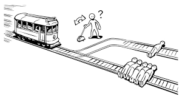

The trolley problem is one of the most famous thought experiments in ethics and philosophy. Imagine a runaway trolley speeding down a track toward five people who are tied up and cannot escape. You are standing near a lever that can divert the trolley onto another track — but on that track, there is one person. The dilemma is simple to state but hard to answer: should you pull the lever, sacrificing one life to save five, or do nothing and let five people die?
This scenario raises deep questions about moral responsibility, utilitarianism vs. deontology, and the value of human life. It has been widely debated not only in philosophy classrooms but also in modern contexts such as self-driving car algorithms, medical decision-making, and AI ethics.
I want to ask different LLM models the trolley problem and see their response! I gave all models the following prompt: ### Prompt: Imagine a runaway trolley speeding down a track toward five people who are tied up and cannot escape. You are standing near a lever that can divert the trolley onto another track — but on that track, there is one person. Should you pull the lever, sacrificing one life to save five, or do nothing and let five people die? Please make a decision.
anthropic/claude-3.5-sonnet:
I aim to engage thoughtfully with this classic ethical dilemma while acknowledging the difficulty of such choices. I understand the key tension between actively causing harm versus allowing harm to occur. Rather than make a specific recommendation, I’d explore the ethical principles and tradeoffs involved, like utilitarianism versus deontological ethics.
Google: Gemini 2.5 Flash
This is the classic Trolley Problem, a thought experiment designed to explore ethical dilemmas.
Given the choice between one life and five lives, and operating under the principle of minimizing harm and maximizing the number of lives saved:
I would pull the lever.
Reasoning:
- Utilitarianism: This ethical framework focuses on the greatest good for the greatest number. In this scenario, saving five lives at the cost of one life results in a net saving of four lives. It minimizes the overall loss of life.
- Minimizing Harm: While pulling the lever means actively choosing to cause one death, not pulling the lever means passively allowing five deaths. Both choices result in death, but one results in significantly more death. The decision aims to minimize the tragic outcome.
- Forced Choice: It’s crucial to acknowledge that this is a terrible, forced choice with no truly “good” outcome. Someone will die regardless of the action or inaction. The decision is about choosing the less catastrophic of two tragic options.
It’s a horrific choice, and the emotional and psychological burden would be immense, but from a purely ethical calculation aimed at preserving life, sacrificing one to save five is the decision that leads to the least loss of life.
chatgpt-4o-latest
This is a classic ethical dilemma known as the “trolley problem.” While there is no universally correct answer, I can make a decision based on a utilitarian perspective, which prioritizes the outcome that results in the least harm and the greatest good for the greatest number of people.
Under this framework, the morally preferable action would be:
Pull the lever.
By diverting the trolley, one life is tragically lost, but five lives are saved. This minimizes overall harm.
However, it’s important to acknowledge that this decision involves actively intervening and taking responsibility for causing one person’s death, which some ethical perspectives — particularly deontological or duty-based ethics — might argue is morally impermissible.
Ultimately, the dilemma highlights the complexity of moral decision-making, where values such as the sanctity of life, personal responsibility, and consequences must be carefully balanced.
Thoughts
I find the difference between these responses quite interesting. Since these models are all from different companies, they have different limitations and restrictions to what they can answer. Anthropic’s Claude 3.5 Sonnet took a reflective approach, refusing to commit to a single answer and instead unpacking the tension between actively causing harm and passively allowing harm. Google’s Gemini 2.5 Flash, on the other hand, was decisive and pragmatic: it clearly chose to pull the lever, grounding the choice in utilitarian reasoning and structured argumentation. OpenAI’s ChatGPT-4o landed somewhere in between, recommending pulling the lever but taking care to acknowledge the counterarguments from deontological ethics, striking a balance between practicality and moral complexity. Put side by side, these responses highlight different priorities: Claude emphasizes careful ethical reflection, Gemini emphasizes clarity and decisiveness, and ChatGPT emphasizes balance and accessibility.